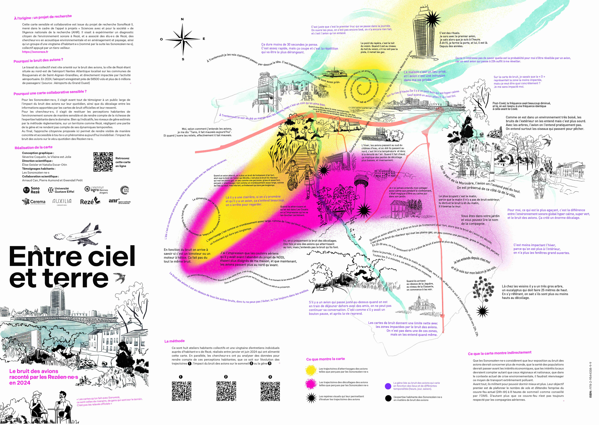
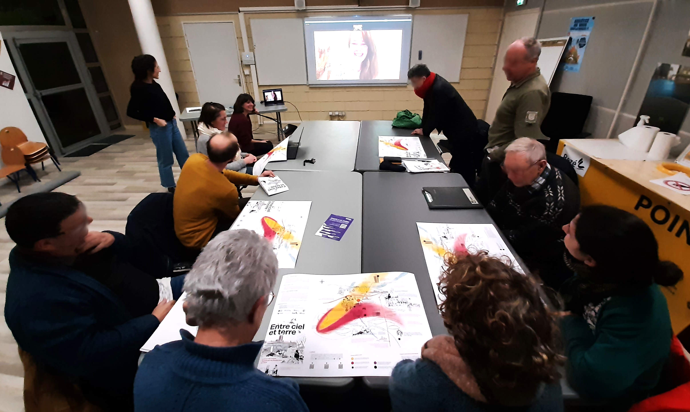

Le bruit des avions raconté par les Rezéen.ne.s
Cette carte sensible et collaborative est issue du projet de recherche SonoRezé II, mené dans le cadre de l’appel à projets « Sciences avec et pour la société » de l’Agence nationale de la recherche (ANR). Il visait à expérimenter un diagnostic citoyen de l’environnement sonore à Rezé, et a associé des élu·e·s de Rezé, des chercheur·e·s en acoustique environnementale et en aménagement et paysage, ainsi qu’un groupe d’une vingtaine d’habitant·e·s (nommé par la suite les Sonorezéen·ne·s), collectif appuyé par un tiers-veilleur.
Le travail du collectif s’est vite orienté sur le bruit des avions, la ville de Rezé étant située au nord-est de l’aéroport Nantes Atlantique localisé sur les communes de Bouguenais et de Saint-Aignan-Grandlieu, et directement impactée par l’activité aéroportuaire. En 2024, l’aéroport enregistrait près de 58500 vols et plus de 6 millions de passagers ! (source : Aéroports du Grand Ouest)
Pour en savoir plus sur le travail réalisé autour de cette thématique, vous pouvez consulter cette page.
Pour les Sonorezéen·ne·s, il s’agit avant tout de témoigner à un public large de l’impact du bruit des avions sur leur quotidien, ainsi que du décalage entre les informations apportées par les cartes de bruit officielles et leur ressenti.
Pour les chercheur·e·s, il s’agit de restituer les perceptions habitantes de l’environnement sonore de manière sensible et de rendre compte de la richesse de l’expertise habitante dans le domaine. Bien qu’indicatifs, les niveaux de gêne estimés par la méthode règlementaire, sur un territoire comme Rezé, négligent une partie de la gêne et ne rendent pas compte de ses dynamiques temporelles.
Au final, l’approche citoyenne proposée ici permet de rendre visible de manière concrète et accessible à tou·te·s un phénomène aujourd’hui invisibilisé : l’impact du bruit des avions sur le vécu quotidien des Rezéen·ne·s.
La carte présentée ci-dessous constitue le fruit de ce travail collaboratif.
Pour la visualiser en grand ou pour la télécharger, vous pouvez cliquer ICI ou sur l'image.
(Attention, du fait de sa haute définition son poids avoisine les 30 mo).

Pour réaliser cette carte, les étapes suivantes ont été suivies :
1- Collecte du ressenti des habitants via 8 ateliers collectifs et 23 entretiens individuels,
2- Synthèse de cette matière par les chercheurs,
3- Croisement / enrichissement de ces données avec celles produites lors du projet (voir cette page),
4- Rédaction d'un cahier des charges, founit à la graphiste Séverine Coquelin, la Vilaine est Jolie, en charge de la production de la carte,
5- Réalisation de la première version de la carte,
6- Présentation de la première version aux membres du projets (habitants, élus et chercheurs), en présence de la graphiste (voir photo ci-dessous),
7- Finalisation de la carte sur la base des retours.

Cette carte est enregistrée avec le code ISBN: 978-2-9544338-9-9
Elle est librement accessible sous format numérique, via cette page (ou le lien court "https://sonoreze.fr/carte_entre_ciel_et_terre.html").
Les droits afférents sont réservés et sont la propriété de ses créateurs.
Une version papier est prévue et devrait prochainement être diffusée localement selon des modalités qu'il reste à définir.
- Conception graphique : Séverine Coquelin, la Vilaine est Jolie
- Direction scientifique : Élise Geisler et Natalia Escar-Otin
- Témoignages habitants : Les Sonorezéen·ne·s
- Collaboration scientifique : Arnaud Can, Pierre Aumond et Gwendall Petit